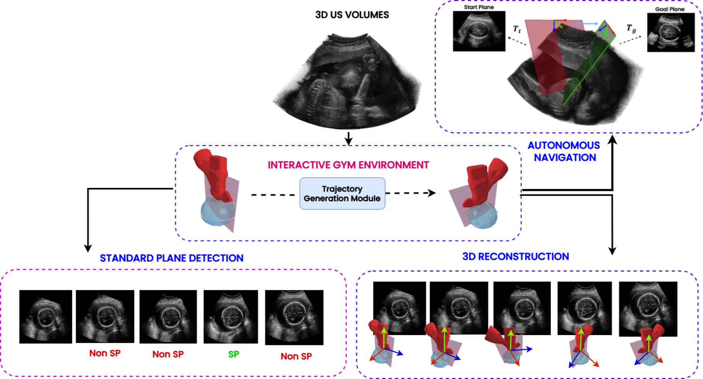
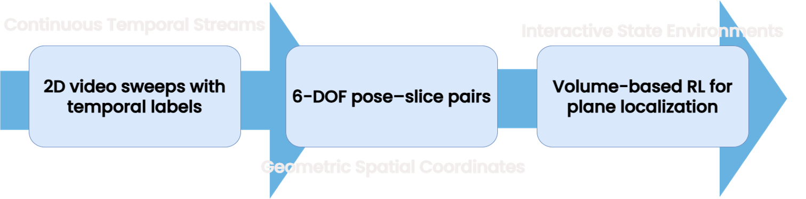
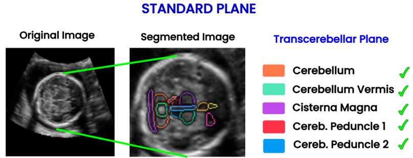
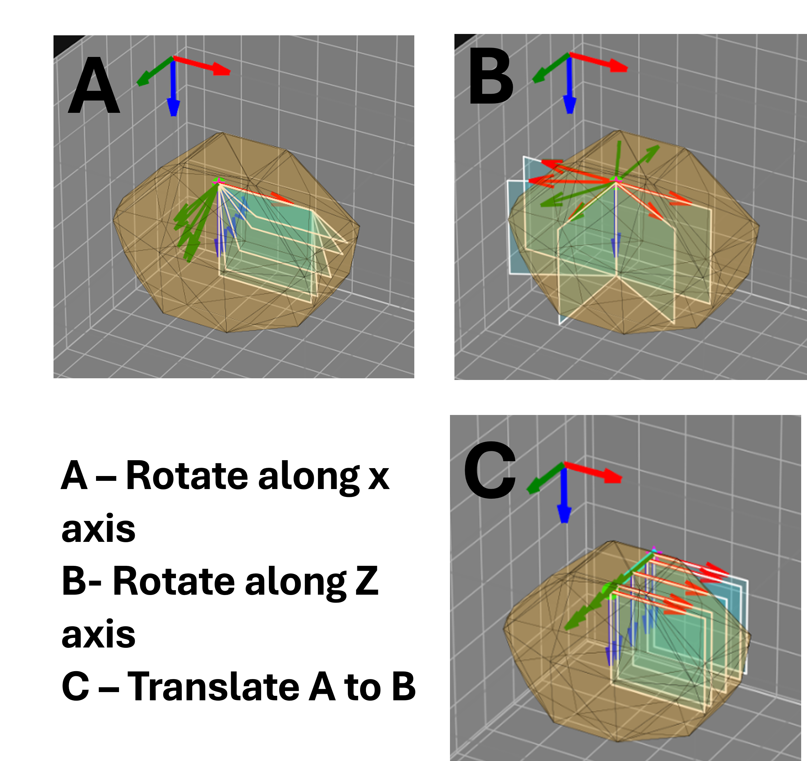
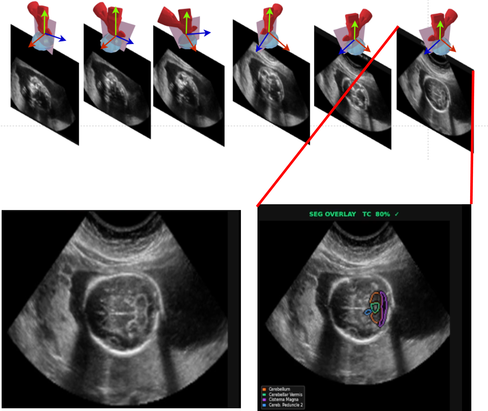

Three-dimensional (3D) ultrasound (US) volumes offer rich, comprehensive anatomical information, yet they remain heavily underutilized in medical AI development. This underutilization stems from a lack of dedicated data-engineering frameworks capable of converting static, archived volumes into interactive, multi-task training data. Existing methods commonly rely on cross-modality synthesis of ultrasound images from CT or MRI data. This practice introduces simulation-to-real domain gaps and fails to preserve native ultrasound-specific acoustic artifacts. Furthermore, alternative approaches are generally restricted to isolated, single-task applications. To address these data-engineering limitations, we present Ultra GYM, a framework that transforms static 3D ultrasound archives into dynamic, interactive training environments. By operating directly on clinical 3D volumes, our platform preserves native acoustic properties and eliminates cross-modality domain shifts. Ultra GYM provides a modular data-engineering framework designed to easily extend to broader medical imaging pipelines. To showcase this multi-task scaling capability, we configure the framework to automatically generate specialized data structures for three highly distinct downstream tasks: (1) temporal video sweeps for standard plane detection, (2) exact six-degree-of-freedom tracking coordinates for 2D to 3D US reconstruction, and (3) an efficient reinforcement learning environment for autonomous Standard Plane detection. Across downstream evaluations, Models trained via the framework achieved 79.47% overall accuracy in standard plane detection, an 84% success rate in autonomous localization, and a local pose reconstruction error of about 0.12mm. These results demonstrate that Ultra GYM serves as an effective integrated framework, extracting diverse, multi-task training trajectories from limited clinical archives to accelerate medical AI deployment. The dataset, code, and videos will be made publicly available upon publication.
One clinical volume → 3 training-ready outputs

Fig A: Ultra GYM transforms a single 3D US Volume into an Interactive Gym Environment, generating data for Standard Plane Detection, 3D Reconstruction, and Autonomous Navigation.

Fig 1: ULTRA-GYM pipeline overview. A 3D ultrasound volume undergoes volumetric slice rendering, anatomically constrained SE(3) probe motion, and dense trajectory annotation.
Models trained via the framework achieved 79.47% overall accuracy.

Fig 3: Anatomical verification using semantic segmentation.
Achieved sub-millimetre local reconstruction accuracy without external tracking hardware.
| Method | Local PDE Avg (mm) | Final Drift Avg (mm) |
|---|---|---|
| Pairwise CNN | 0.14 | 10.80 |
| DCL-Net Baseline | 0.12 | 8.47 |

Fig B: Sequential probe movements with segmentation overlay (TC 80% confidence).
Formulated as an MDP for goal-directed probe navigation, achieving an 84% success rate.

Fig 4: Navigation training metrics showing rising episodic rewards and decreasing step counts.